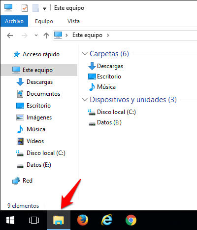
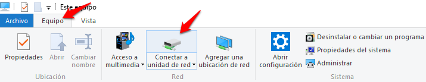
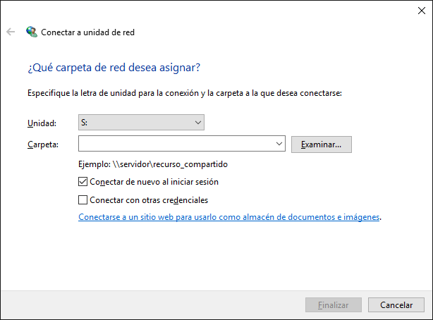

Configurar WebDAV para Windows 8/10
- En primer lugar navegue al escritorio: después de iniciar sesión en Windows, clic en el icono Escritorio.
- Desde el escritorio, clic en el explorador de archivos, asegurese que 'Este equipo' está seleccionado en el panel izquierdo.

- En la parte superior del explorador de archivos, clic sobre Equipo > Conectar a unidad de red.

- Seleccione una letra de unidad libre (por ejemplo, S:) de la lista de unidades.

- En el apartado Carpeta, escriba (o copie y pegue) la dirección URL del sitio mostrada en el paso 1 y haga clic en Finalizar.
- En la ventana emergente, debe introducir su usuario y clave de la plataforma y hacer clic en Aceptar.
- Ya puedes copiar y pegar o arrastrar archivos y carpetas desde tu ordenador hacia esta nueva unidad. Los archivos serán accesibles desde la herramienta recursos del sitio dentro de la plataforma.
Método alternativo para configurar WebDAV en Windows
Si el proceso descrito anteriormente da problemas de
conexión, puedes usar el cliente de WedDAV
Cyberduck.
Configurar WebDAV para Windows Vista/Windows 7
Nota: Para usar WebDAV en Windows Vista
es necesario tener instalado el Service Pack 2. Si no tienes el
Service Pack 2 instalado, debes ejecutar Windows Update haciendo clic
en Inicio > Todos los programas > Windows
Update.
- Desde el escritorio o menú inicio, clic en Mi Pc o Equipo.
- Desde la parte superior de la ventana, clic en Conectar a una unidad de red.
- Selecciona una letra de unidad libre (e.g., Z) de la lista de Unidades.
- En el apartado Carpeta, escriba (o copie y pegue) la URL de este sitio mostrada arriba en el paso 1 y haga clic en Finalizar.
- En la ventana emergente, debe introducir su usuario y clave de la plataforma y hacer clic en Aceptar.
- Ya puedes copiar y pegar o arrastrar archivos y carpetas desde tu ordenador hacia esta nueva unidad. Los archivos serán accesibles desde la herramienta recursos del sitio dentro de la plataforma.
Cuando el proceso de configuración finalice, los
recursos del sitio aparceran en una unidad dentro de Mi Pc o Equipo,
y se comportará como cualquier disco duro dentro de Windows.
Método alternativo para configurar WebDAV en Windows
Si el proceso descrito anteriormente da problemas de
conexión, puedes usar el cliente de WedDAV
Cyberduck.
Configurar WebDAV para Mac (OS 10.4 - 10.6)
Nota: Según la versión de su sistema
operativo el uso de Finder puede ser errático. Si le da
problemas le recomendamos que use Cyberduck.
- Desde el menu de la parte superior en el Finder, selecciona Ir > Conectarse al servidor
- En Dirección del Servidor, introduce (o copia y pega) la URL que se encuentra en la parte superior de esta página.
- Haz clic en el botón + si quieres guardar esta URL para accesos futuros.
- Haz clic Conectar.
- Introduce tu usuario de Sakai y tu contraseña y haz clic en Conectar.
Ahora verás una ventana en tu Mac que representa los
recursos que tienes en el sitio del Aula Virtual. Simplemente copia
y pega desde tus ventanas del finder hacia esta nueva ventana para
asi transferir los archivos a recursos del sitio dentro del Aula
virtual.
Configurar WebDAV para Linux (Gnome)
- Vamos a Archivos > Conectar con el servidor...
- En Dirección de servidor introducimos la dirección: davs://xxxx/dav/xxxx
- Pulamos el botón Conectar.
- Al conectar le aparecerá una ventana pidiendo la clave de la plataforma.
Cuando el proceso de configuración está completo, la
carpeta de recursos del sitio aparecera en Archivos, y
actuará como una carpeta normal dentro de Linux. Ahora podemos
copiar, pegar, arrastrar todo tipo de ficheros y carpetas de nuestro
ordenador a esta nueva carpeta.
Configurar WebDAV para Linux (Gnome) versiones anteriores
- Vamos a Lugares > Conectar con el servidor...
- En Tipo de servicio seleccionamos WebDav .
- En Servidor ponemos: hostname
- En Puerto ponemos: 80
- En Carpeta ponemos el final de la URL del paso uno: dav/xxxx-xxxx-xxxx
- Marcamos la opción de Añadir marcador
- En Nombre del marcador ponemos el nombre de la carpeta que se creará dentro de Red que hará referencia a su sitio de la plataforma (por ejemplo, Recursos de Didactica de la educación) y clic en Siguiente.
- Pulamos el botón Conectar.
- Al conectar le aparecerá una ventana pidiendo la clave de la plataforma.
Cuando el proceso de configuración está completo, la
carpeta de recursos del sitio aparecera en Lugares, y
actuará como una carpeta normal dentro de Linux. Ahora podemos
copiar, pegar, arrastrar todo tipo de ficheros y carpetas de nuestro
ordenador a esta nueva carpeta.
Configurar WebDAV para Linux (KDE)
- Abrimos el Gestor de archivos (Dolphin).
- A la izquierda en Lugares seleccionamos Red.
- A continuación pinchamos en Añadir carpeta de red.
- Marcamos Carpeta Web (webdav) y pulsamos en Siguiente.
- En Nombre ponemos el nombre de la carpeta que se creará dentro de Red que hará referencia a su sitio de la plataforma (por ejemplo, Recursos de Didactica de la educación) y clic en Siguiente.
- En Usuario ponemos nuestro usuario de la plataforma.
- En Servidor ponemos: hostname
- En Carpeta ponemos el final de la URL del paso uno: dav/xxxx-xxxx-xxxx
- Si es HTTPS marcamos la opción Usar cifrado, al marcala el puerto se cambiará automáticamente a 80.
- Con la opción Crear un icono para esta carpeta remota, hacemos que se guarden todos los datos y no los tengamos que volver a introducir.
- Pulamos el botón Guardar y conectar.
- Al conectar le aparecerá una ventana pidiendo la clave de la plataforma.
Cuando el proceso de configuración está completo, la
carpeta de recursos del sitio aparecera en Red dentro del
Gestor de archivos (Dolphin), y actuará como una
carpeta normal dentro de Linux. Ahora podemos copiar, pegar,
arrastrar todo tipo de ficheros y carpetas de nuestro ordenador a
esta nueva carpeta.
Configurar WebDAV para Linux (modo consola)
- Abrimos un terminal.
- Escribimos la instrucción cadaver la URL del paso 1
- Le puede solicitar que acepte el certificado de tu institución.
- Debe autenticarse con su usuario y clave de la plataforma.
- Ahora puede descargar y subir documentos por línea de comandos.
Escriba help para ver los comandos disponibles.
Configurar WebDAV para Mac/Windows usando Cyberduck
- Descargar el cliente WebDAV Cyberduck.
- Para Windows o Mac OS X versión 10.5 y superiores, descargar e instalar la versión más reciente en:
http://cyberduck.io/
- Para Mac OS X versiones anteriores a 10.5, descargar el cliente WebDAV Cyberduck en:
http://update.cyberduck.io/Cyberduck-2.8.5.dmg
- Descomprima el archivo y haz doble clic en el fichero .dmg. (Dependiendo de la configuración de tu descompresor, la imagen se montará automáticamente en el disco).
- Una imagen de disco llamada Cyberduck-2.8.5 debe estar ahora disponible. Simplemente arrastra la imagen de disco hacia tu carpeta de Aplicaciones
- Abre la aplicación Cyberduck desde Aplicaciones.
- Haga clic en el botón Nueva Conexión.
- En Servidor pegue la dirección copiada en el paso 1. Eso le rellenará automáticamente todos los campos. También lo puede rellenar manualmente:
- En Servidor ponemos: hostname
- En Puerto ponemos: 80
- Pulse sobre Mas opciones y ponga en Carpeta el final de la URL del paso uno: dav/xxxx-xxxx-xxxx
- Desactive la opción de Usuario anónimo.
- Introduce tu usuario y tu contraseña de la plataforma
- Haga clic en el botón Conectar.
Le aparecerá una ventana con los recursos de la plataforma, desde la cual podrá arrastrar ficheros a su equipo, o bien arrastrar ficheros de su equipo.
Puede guardar esta configuración para futuras conexiones:
- Vaya al menú superior Favorito.
- Pulse sobre la opció Nuevo Favorito.
- En la ventana cambie el nombre que aparece "hostname – WebDAV (HTTPS)" por el nombre de su asignatura.
- Cierre la ventana.